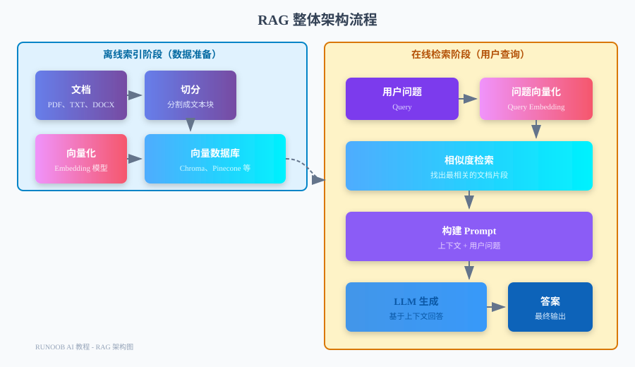

RAG 検索拡張生成
あなたはこんなシーンに出会ったことはありませんか？
何百ページもある製品マニュアルがあり、ユーザーが非常に具体的な質問をしたとき、探し回っても答えが見つからない。
-
あなたの会社には数年分の内部ドキュメント、議事録、技術仕様が蓄積されており、新入社員が特定の業務ルールを理解したいとき、どこから調べればいいのかまったく分からない。
-
電子書籍、調査レポート、論文がたくさんあり、AI にこれらの内容に基づいて回答させたいが、本全体をそのまま AI に貼り付けると、コンテキストウィンドウに収まらない。
これこそが RAG が解決しようとする問題です。
RAG（Retrieval-Augmented Generation、検索拡張生成）は、大規模言語モデルに特定の知識ベースに基づいて質問に回答させる技術です。。
RAG の核となる考え方は非常にシンプルです。まず知識ベースから最も関連性の高いコンテンツを探し出し、そのコンテンツをユーザーの質問と一緒に LLM に渡し、LLM にこれらのコンテキストに基づいて回答させます。
RAG がなければ、LLM は学習データ内のコンテンツしか知りません。RAG があれば、LLM はあなたのプライベートな最新データを活用できます。
なぜ RAG が必要か
RAG はこれらの問題を解決する唯一の方法ではありませんが、現在最も実用的でコストが低い方法の一つです。
LLM の知識カットオフ問題
-
すべての LLM には知識カットオフ日があります。学習データが特定の時点までしかなく、それ以降に起こったことは知りません。
-
例えば GPT-4 の知識は 2023 年 10 月までで、2024 年に起きたニュースを尋ねると、「わかりません」としか言えません。
-
さらに重要なのは、あなたのプライベートデータ（内部ドキュメント、製品マニュアル、社内規程）は LLM の学習データに一度も登場していないので、知るはずがないということです。
プライベートデータは LLM に直接入力できない
こう思うかもしれません。「それなら LLM にドキュメントを直接貼り付ければいいのでは？」
答えは、短いドキュメントは可能ですが、長いドキュメントはダメです。
-
まず、LLM のコンテキストウィンドウには制限があります。例えば GPT-3.5 は 16K トークンのみで、およそ1万字程度です。何百ページもあるマニュアルは、そもそも貼り付けられません。
-
次に、コンテキストウィンドウが十分に大きくても、ドキュメント全体を詰め込むと効果は良くありません。LLM は長いテキストの中で迷いやすく、本当に関連する情報を見つけられません。
-
最後に、コストの問題です。GPT-4 128K コンテキストの価格は、入力100万トークンあたり10ドルです。毎回本全体を詰め込むと、お財布が泣きます。
RAG vs ファインチューニング：どう選ぶか
LLM に新しいデータを使わせるもう一つの方法は、ファインチューニング（Fine-tuning）です。新しいデータでモデルをさらに訓練します。
しかし、ファインチューニングと RAG には本質的な違いがあり、適用シーンはまったく異なります。
| 比較項目 | RAG | ファインチューニング |
|---|---|---|
| データの新しさ | いつでも更新でき、すぐに利用可能 | 再トレーニングが必要で、サイクルが長い |
| 適用可能なデータ量 | 非常に大きい（100万単位のドキュメント） | 中程度（数千から数万サンプル） |
| 引用元 | 回答がどのドキュメントから来たかを表示できる | 出所を追跡できない |
| ハルシネーション問題 | コンテキストを提供することでハルシネーションを減らす | 依然としてハルシネーションが発生する可能性がある |
| 知識の変更 | ドキュメントを直接削除または更新するだけ | 再トレーニングが必要で、「忘れる」のが難しい |
| 技術的なハードル | 低い、既存のフレームワークでよい | 高い、GPU とトレーニング経験が必要 |
| コスト | 主にベクトルデータベースと Embedding | トレーニングコストが高く、推論コストも高い |
シンプルな判断基準：LLM に事実系の知識（製品説明、社内規程など）を「知らせる」場合は RAG を使い、LLM に特定のスタイルや能力（文章スタイル、コーディング規約など）を「習得させる」場合はファインチューニングを使います。
RAG アーキテクチャの全体像
RAG はオフラインのインデックス段階とオンラインの検索段階の2つの段階に分かれます。
まず完全なアーキテクチャ図を見てみましょう。

オフラインインデックス段階（データ準備）
この段階はバックグラウンドで実行され、ユーザーが直接見ることはありません。
その役割は、ドキュメントを高速に検索できる形式に処理することです。
手順は次のとおりです。
-
1. ドキュメントの読み込み：PDF、TXT、DOCX、Webページなどさまざまな形式のドキュメントを読み取ります。
-
2. ドキュメントの分割：長いドキュメントを小さなテキストチャンク（Chunk）に分割します。通常は数百から千語程度です。
-
3. ベクトル化：Embedding モデルを使って各テキストチャンクをベクトル（数字の並び）に変換します。
-
4. 保存：ベクトルと元のテキストを一緒にベクトルデータベースに保存します。
この段階は一度だけ実行すればよく、ドキュメントが更新されたときに再実行します。
オンライン検索段階（ユーザークエリ）
この段階はユーザーが質問したときにリアルタイムで発生します。
手順は次のとおりです。
1. 質問のベクトル化：同じ Embedding モデルを使ってユーザーの質問もベクトルに変換します。
-
2. 類似度検索：ベクトルデータベース内で、質問ベクトルに最も近いテキストチャンクをいくつか見つけます。
-
3. Prompt の構築：検索されたテキストチャンクをコンテキストとして、ユーザーの質問と一緒に Prompt に組み立てます。
-
4. LLM 生成：Prompt を LLM に渡し、コンテキストに基づいて回答させます。
-
5. 回答を返す：LLM の回答をユーザーに返します。通常は引用したドキュメントの出所も添付されます。
ベクトルデータベース入門
ベクトルデータベースは RAG の主要コンポーネントの一つです。それを理解するには、まずベクトルとは何かを理解する必要があります。
ベクトル（Embedding）とは
ベクトル（Embedding）は、テキストを変換して得られる数字の並びです。
例えば「猫」という単語は、[0.23, -0.45, 0.12, 0.89, ...] のような数百次元のベクトルに変換されるかもしれません。
重要なのは次の点です。意味が近いテキストは、そのベクトル同士も空間内で非常に近くなります。。
例えば：
- 「猫」と「猫咪」のベクトル距離は非常に近い
- 「猫」と「犬」のベクトル距離は、「自動車」との距離よりも近い
- 「猫が好き」と「猫ちゃんが大好き」のベクトル距離は非常に近い
これが「意味検索」ができる基盤です。キーワード一致ではなく、意味でマッチングします。
意味的類似度の計算原理
2つのベクトルの類似度は通常、「コサイン類似度」（Cosine Similarity）で計算されます。
コサイン類似度の範囲は -1 から 1 です。
- 1 は完全に同じ
- 0 は無関係
- -1 は完全に反対
実際の応用では、通常は正の類似度のみを気にします。1 に近いほど関連性が高いことを示します。
質問をすると、ベクトルデータベースは質問ベクトルとすべてのドキュメントベクトルの類似度をすばやく計算し、最も関連性の高い上位いくつかを返します。
主流のベクトルデータベース
市場には多くのベクトルデータベースがあり、それぞれ特徴があります：
| データベース | タイプ | 特徴 | 適用シーン |
|---|---|---|---|
| Chroma | ローカル/オープンソース | 軽量、使いやすい、Pythonフレンドリー | プロトタイプ開発、小規模アプリケーション |
| Pinecone | クラウドサービス/SaaS | マネージドサービス、運用不要、弾力的なスケーリング | 本番環境、大規模アプリケーション |
| Weaviate | オープンソース/マネージド | 機能が豊富、GraphQL対応 | 高度な機能が必要なシーン |
| Qdrant | オープンソース/マネージド | 高性能、Rust製 | 性能要求が高いシーン |
| Milvus | オープンソース/マネージド | 機能が包括的、エンタープライズ向け | 大規模な企業アプリケーション |
| FAISS | ローカルライブラリ | Facebook製、非常に高速 | 永続化が不要なシーン |
初心者には、Chromaから始めることをお勧めします——インストールが簡単で、追加設定が不要で、学習やプロトタイプ開発に非常に適しています。
ドキュメント処理フロー
ドキュメント処理はRAGの中でも見落とされがちですが、実際には非常に重要な要素です。
検索効果が良いかどうかは、ドキュメント処理がうまくできているかに大きく依存します。
対応ドキュメント形式
LangChainは多くのドキュメント形式に対応しています：
- プレーンテキスト：.txt, .md
- PDF：.pdf
- Office：.docx, .pptx, .xlsx
- ウェブページ：HTML, URL
- コード：.py、.js、.java など
- JSON：.json, .jsonl
- CSV：.csv
各形式に対応するローダーがあり、とても便利に使えます。
ドキュメント分割戦略
ドキュメント分割（チャンキング）は、長いドキュメントを小さな断片に切り分けるプロセスです。
これは簡単そうに見えて、実は多くのノウハウがあります：
- 小さく切りすぎる：コンテキストが失われる可能性があり、完全な意味が途切れてしまう
- 大きく切りすぎる：関連しない情報が含まれ、コンテキストウィンドウを無駄にする
一般的な分割戦略：
| 戦略 | 原理 | 適用シーン |
|---|---|---|
| 文字数ベース | 単純に文字数で分割。例えば500文字ごとに1ブロック | 単純なシーン、コンテキストへの要求が低い |
| 段落ベース | 改行で分割し、できるだけ段落を完全に保つ | 形式が整っているドキュメント |
| 再帰的分割 | 優先的に段落で分割し、長すぎる場合は文単位、最後に単語単位で分割 | ほとんどのシーンで最初に選ばれる |
| セマンティック分割 | 意味的類似度に基づいて分割し、意味の完全性を保証する | 意味への要求が高いシーン |
ほとんどの場合、LangChainのRecursiveCharacterTextSplitterで十分です。
分割サイズの選択テクニック
分割サイズ（チャンクサイズ）は、シーンに応じて調整が必要なパラメータです。
参考となる原則：
- QAシーン：500〜1000文字が、ちょうど完全なQAペアを1つ含めるサイズ
- 要約シーン：1000〜2000文字、より多くのコンテキストが必要
- コードシーン：関数やクラス単位で分割し、コードブロックの完全性を保つ
もう1つの重要なパラメータ：オーバーラップ——隣接する2つのテキストブロック間で重複する文字数。
オーバーラップにより、重要な情報が2つのブロックに分割されるのを防げます。通常は分割サイズの10%〜20%に設定します。
「最適な」分割パラメータを盲目的に追求しないでください。まず500文字、オーバーラップ50から始めて、実際に効果をテストし、その後調整します。
埋め込みモデル（Embedding Model）
埋め込みモデルは、テキストをベクトルに変換するモデルです。
その品質は検索効果に直接影響します——優れたEmbeddingモデルは意味を正確に理解し、関連するドキュメントを上位に表示できます。
Embedding モデルとは
Embeddingモデルは事前学習済みのニューラルネットワークで、入力はテキスト、出力はベクトルです。
その訓練目標は、意味的に近いテキストは、出力されるベクトルも近くなるようにすることです。
例えば：
- 「如何学习 Python」と「Python 学习方法」→ ベクトルが近い
- 「猫はかわいい」と「犬はかわいい」→ ベクトルにはある程度の距離があるが比較の近い
- 「如何学习 Python」と「猫咪很可爱」→ ベクトル距離が非常に遠い
OpenAI text-embedding-3 シリーズ
OpenAIは現在最も人気のあるEmbeddingモデルを提供しています：
| モデル | 次元 | 価格（100万トークンあたり） | 特徴 |
|---|---|---|---|
| text-embedding-3-small | 1536 | $0.02 | コストパフォーマンスが高く、ほとんどのシーンで十分 |
| text-embedding-3-large | 3072 | $0.13 | 効果がより良く、高精度なニーズに適している |
text-embedding-3-smallは現在の第一候補です——前世代のtext-embedding-ada-002よりも効果が良く、価格も安くなっています。
オープンソースの Embedding モデル
OpenAIを使いたくない場合や、データプライバシーの要件がある場合も、多くのオープンソースの選択肢があります：
| モデル | 次元 | 特徴 |
|---|---|---|
| sentence-transformers/all-MiniLM-L6-v2 | 384 | 軽量、高速、効果も良好 |
| sentence-transformers/all-mpnet-base-v2 | 768 | 効果はより良いが、より遅く、より大きい |
| BAAI/bge-large-zh-v1.5 | 1024 | 中国語に特化して最適化 |
| Alibaba-NLP/gte-large-zh | 1024 | 阿里巴巴製、中国語の効果が良い |
中国語のシーンでは、BAAI/bgeシリーズまたはAlibaba-NLP/gteシリーズをお勧めします——これらは中国語に特化して最適化されており、汎用モデルよりも効果が優れています。
検索戦略
検索は「最も関連するドキュメントを見つける」ほど単純ではありません——異なる戦略が異なるシーンに適しています。
ベクトル類似度検索
これは最も一般的な検索方法です：質問ベクトルとすべてのドキュメントベクトルの類似度を計算し、最も関連する上位K件を返します。
利点：意味を理解でき、同義語や類義語もマッチングできます。
欠点：正確な専門用語や固有名詞については、キーワード検索ほど正確でない場合があります。
例えばユーザーが「runoob 的 Python 教程」と尋ねた場合、ベクトル検索は「教程」と「课程」が類似していることを理解できますが、ユーザーが「runoob Python3.10 文档」と尋ねた場合は、キーワード検索の方が正確かもしれません。
キーワード検索（BM25）
これは従来の検索エンジンが使う方法です：キーワードをマッチングし、語頻度や逆文書頻度などに基づいてスコアリングします。
-
利点：用語、製品名、型番などの正確なマッチングに効果的です。
-
欠点：同義語や意味的関係を理解できません。
例えばユーザーがプログラミングの学習方法を尋ねた場合、キーワード検索は「编程」を含むドキュメントしか見つけられず、「写代码」と書いてある同じ意味のドキュメントは見つけられません。
ハイブリッド検索（Hybrid Search）
2つの方法にそれぞれ長所と短所があるなら、一緒に使ってみてはどうでしょうか？
ハイブリッド検索は、ベクトル検索とキーワード検索を同時に行い、結果を統合して再ランキングする方法です。
これにより、意味理解を活用しつつ、正確なマッチングも保証できます。
多くのベクトルデータベースがハイブリッド検索をサポートしています。例えばWeaviate、Pinecone、Qdrantなどです。
どれを使うか迷ったら、ハイブリッド検索を選びましょう——ほとんどの場合、最も効果的です。
生成段階の最適化
関連ドキュメントを検索するのは最初の一歩に過ぎず、LLMにこれらのドキュメントに基づいて良い回答を生成させる方法にも、多くのテクニックがあります。
Prompt テンプレート設計
Promptテンプレートは、RAGにおいて出力品質に影響を与える重要な要素です。
良いRAG Promptには通常、以下の要素が含まれます：
- 役割設定：LLMにどのような役割なのかを伝える
- コンテキスト：検索されたドキュメントの内容
- タスク説明：LLMに何をさせるか
- 制約条件：例えば「コンテキストにのみ基づいて回答する」、「わからない場合はわからないと言う」
- 出力形式：LLMにどのように回答してほしいか
古典的なテンプレート：
実例
RAG_PROMPT_TEMPLATE = """あなたはプロの{role}です。
以下のコンテキストに基づいてユーザーの質問に回答してください。コンテキストに関連情報がない場合は、「申し訳ございません、関連情報が見つかりませんでした」と言ってください。
コンテキスト：
{context}
ユーザーの質問：{question}
簡潔で正確な言葉で回答してください："""
ハルシネーションを減らす方法
幻覚（ハルシネーション）は、LLMが事実を捏造する現象です——もっともらしく話しますが、全て嘘です。
RAGは幻覚を減らせますが、完全に消除することはできません。
幻覚を減らすためのテクニック：
- Promptで「コンテキストにのみ基づいて回答する」ことを強調する
- LLMに回答の中で原文の断片を引用させる
- 検索結果が関連しない場合は、LLMに「わかりません」と言わせる
- 複数の LLM で回答を相互検証する
- LLM にまずコンテキストから関連内容を探させてから回答させる
引用元の明記
ユーザーに回答の出所を知らせることは非常に重要です。信頼性が増すだけでなく、ユーザーが検証しやすくなります。
一般的な方法：
- 回答中に「ドキュメント A の 2 ページによる」のように出所を明記する
- 回答の末尾に参考ドキュメントのタイトルとリンクを列挙する
- ユーザーがクリックすると原文の位置にジャンプできるようにする
LangChain の高度なフレームワーク（例：LlamaIndex）はこれを自動で行ってくれます。
実践：LangChain でドキュメントQAシステムを構築
ここまでいろいろ説明しましたが、実際に完全な RAG システムを作ってみましょう。
LangChain + Chroma + OpenAI を使ってドキュメント Q&A システムを構築します。
環境準備
まず必要なライブラリをインストールします：
pip install langchain langchain-openai langchain-chroma python-dotenv
次にプロジェクトディレクトリに .env ファイルを作成し、OpenAI API Key を入力します：
OPENAI_API_KEY=你的-api-key-在这里
完全なコード実装
これはインデックス作成機能とクエリ機能を含む完全な RAG システムです：
実例
# RAG ドキュメントQ&Aシステムの完全実装
# ============================================
import os
from dotenv import load_dotenv
from langchain.text_splitter import RecursiveCharacterTextSplitter
from langchain_openai import OpenAIEmbeddings
from langchain_chroma import Chroma
from langchain_openai import ChatOpenAI
from langchain.chains import RetrievalQA
from langchain.prompts import PromptTemplate
from langchain.schema import Document
def load_documents_from_directory(directory: str) -> list[Document]:
"""ディレクトリからドキュメントを読み込む
ここではデモのため、手動でいくつかのドキュメントを作成します
実際のプロジェクトでは DirectoryLoader を使って実際のファイルを読み込めます
"""
documents = [
Document(
page_content="""RUNOOB チュートリアルサイトは 2013 年に菜鳥教程チームによって設立されました。
サイトの目標は、プログラミング初心者にわかりやすいプログラミングチュートリアルを提供することです。
HTML、CSS、JavaScript、Python、Java、C++ など、さまざまなプログラミング言語のチュートリアルを提供しています。""",
metadata={"source": "runoob_intro.txt", "page": 1}
),
Document(
page_content="""RUNOOB の Python チュートリアルは、Python の重要な知識ポイントをすべて網羅しています。
内容は、Python の基本構文、データ型、制御文、関数、モジュール、ファイル操作などです。
チュートリアルには多数のコード例が用意されており、各例は慎重に設計・テストされています。
オンラインの Python エディタも提供しており、ブラウザで直接コードを実行できます。""",
metadata={"source": "python_tutorial.txt", "page": 1}
),
Document(
page_content="""RUNOOB チュートリアルの特徴は、内容が簡潔で、例が豊富、実践重視であることです。
「プログラミングを学ぶ最良の方法はコードを書くことだ」と私たちは信じています。
そのため、各知識ポイントに実行可能なコード例が付属しており、見ながら練習できます。
私たちのチュートリアルは完全無料で、誰でもアクセスして学習できます。""",
metadata={"source": "features.txt", "page": 1}
),
Document(
page_content="""テキストチュートリアルに加えて、RUNOOB はビデオチュートリアルも提供しています。
ビデオチュートリアルはより直感的で、視覚学習型のユーザーに適しています。
ビデオチュートリアルは、Python、Web 開発、データ分析などの人気テーマをカバーしています。
動画は Bilibili と YouTube で見つけられます。""",
metadata={"source": "video_course.txt", "page": 1}
),
]
print(f"読み込まれたドキュメントは {len(documents)} 件です")
return documents
def split_documents(documents: list[Document], chunk_size: int = 500, chunk_overlap: int = 50) -> list[Document]:
"""ドキュメントを分割"""
text_splitter = RecursiveCharacterTextSplitter(
chunk_size=chunk_size,
chunk_overlap=chunk_overlap,
length_function=len,
separators=["\n\n", "\n", "。", "！", "？", "，", " ", ""],
)
splits = text_splitter.split_documents(documents)
print(f"{len(documents)} 件のドキュメントを {len(splits)} 個のテキストチャンクに分割しました")
return splits
def create_vector_store(splits: list[Document], persist_directory: str = "./chroma_db") -> Chroma:
"""ベクトルデータベースを作成"""
embeddings = OpenAIEmbeddings(model="text-embedding-3-small")
vector_store = Chroma.from_documents(
documents=splits,
embedding=embeddings,
persist_directory=persist_directory,
)
print(f"ベクトルデータベースが作成されました。合計 {vector_store._collection.count()} 件のレコード")
return vector_store
def load_vector_store(persist_directory: str = "./chroma_db") -> Chroma:
"""既存のベクトルデータベースを読み込み"""
embeddings = OpenAIEmbeddings(model="text-embedding-3-small")
vector_store = Chroma(
persist_directory=persist_directory,
embedding_function=embeddings,
)
print(f"ベクトルデータベースが読み込まれました。合計 {vector_store._collection.count()} 件のレコード")
return vector_store
def create_rag_chain(vector_store: Chroma):
"""RAG Q&A チェーンを作成"""
# カスタム Prompt テンプレート
template = """あなたはプロの RUNOOB カスタマーサポートアシスタントです。
以下のコンテキストに基づいてユーザーの質問に回答してください。コンテキストに関連情報がない場合は、「申し訳ございません、関連情報が見つかりませんでした」と答えてください。
回答は簡潔明瞭にし、中国語を使用してください。
コンテキスト：
{context}
ユーザーの質問：{question}
回答："""
prompt = PromptTemplate(
template=template,
input_variables=["context", "question"],
)
llm = ChatOpenAI(model="gpt-3.5-turbo", temperature=0)
# 検索チェーンを作成
rag_chain = RetrievalQA.from_chain_type(
llm=llm,
chain_type="stuff",
retriever=vector_store.as_retriever(search_kwargs={"k": 3}),
chain_type_kwargs={"prompt": prompt},
return_source_documents=True,
)
return rag_chain
def main():
"""メイン関数"""
# 環境変数を読み込み
load_dotenv()
# データベースが既に存在するか確認
db_exists = os.path.exists("./chroma_db") and os.path.isdir("./chroma_db")
if db_exists:
print("既存のデータベースが見つかりました。読み込んでいます...")
vector_store = load_vector_store()
else:
print("新しいデータベースを作成しています...")
# 1. ドキュメントを読み込み
docs = load_documents_from_directory("./data")
# 2. ドキュメントを分割
splits = split_documents(docs)
# 3. ベクトルデータベースを作成
vector_store = create_vector_store(splits)
# 4. RAG チェーンを作成
rag_chain = create_rag_chain(vector_store)
# 5. クエリをテスト
test_questions = [
"RUNOOB はいつ設立されましたか？",
"RUNOOB の Python チュートリアルの特徴は何ですか？",
"RUNOOB にはビデオチュートリアルはありますか？",
"RUNOOB で C++ を学ぶにはどうすればよいですか？",
"RUNOOB のチュートリアルは有料ですか？",
]
for question in test_questions:
print(f"\n{'='*60}")
print(f"質問：{question}")
print(f"{'='*60}")
result = rag_chain.invoke({"query": question})
answer = result["result"]
sources = result["source_documents"]
print(f"回答：{answer}")
print("\n参考元：")
for i, doc in enumerate(sources, 1):
print(f" [{i}] {doc.metadata['source']} ({doc.metadata['page']} ページ)")
print(f" 抜粋：{doc.page_content[:50]}...")
if __name__ == "__main__":
main()
このプログラムを実行すると、次のような出力が表示されます：
创建新的数据库...
已加载 4 个文档
已将 4 个文档切分为 4 个文本块
向量数据库已创建，共 4 条记录
============================================================
问题：RUNOOB 是什么时候创立的？
============================================================
回答：RUNOOB 教程网站创立于 2013 年。
参考来源：
[1] runoob_intro.txt (第 1 页)
片段：RUNOOB 教程网站创立于 2013 年，由菜鸟教程团队创建。...
[2] features.txt (第 1 页)
片段：除了文字教程，RUNOOB 还提供了视频教程。...
============================================================
问题：RUNOOB 的 Python 教程有什么特点？
============================================================
回答：RUNOOB 的 Python 教程涵盖了 Python 的所有重要知识点，包括基础语法、数据类型、控制语句、函数、模块、文件操作等，并且提供了大量经过精心设计和测试的代码示例，还提供了在线 Python 编辑器，可以直接在浏览器中运行代码。
参考来源：
[1] python_tutorial.txt (第 1 页)
片段：RUNOOB 的 Python 教程涵盖了 Python 的所有重要知识点。...
[2] features.txt (第 1 页)
片段：RUNOOB 教程的特点是内容简洁、示例丰富、注重实践。...
おめでとうございます！完全な RAG ドキュメント Q&A システムの構築に成功しました。
高度な最適化：Re-ranking、HyDE
基本的な RAG でも十分使えますが、さらに効果を高めたい場合は、以下の高度な最適化手法を試してみてください。
Re-ranking（再ランキング）
ベクトル検索の結果は類似度で並べ替えられますが、類似度が高いことが必ずしも質問に最適であるとは限りません。
Re-ranking とは、まずベクトル検索で上位 K 件（例：20 件）の結果を取得し、その後、より精密なモデルでこれらの結果を再ランク付けし、最良のものをいくつか選んで LLM に渡す方法です。
よく使われる Re-ranking モデル：
- cross-encoder/ms-marco-MiniLM-L-6-v2
- BAAI/bge-reranker-large
手順が 1 つ増えますが、効果の向上が顕著なので、やる価値があります。
HyDE（Hypothetical Document Embedding）
HyDE は非常に巧妙なアイデアです。まず LLM でユーザーの質問に対する「仮の回答」を生成し、その仮の回答を使って検索します。
なぜこれが効果的なのでしょうか？質問は通常短く情報密度が低いのに対し、仮の回答はより長くドキュメントのスタイルに近いため、実際のドキュメントとの類似度が高くなるからです。
例：
- ユーザーの質問：「RUNOOB はいつ設立されたのですか？」
- 仮の回答：「RUNOOB チュートリアルサイトは 2013 年に菜鳥教程チームによって設立され、プログラミング初心者に高品質なチュートリアルを提供することを目的としています。」
仮の回答を使って検索すると、より関連性の高いドキュメントが見つかることが多いです。
その他の拡張